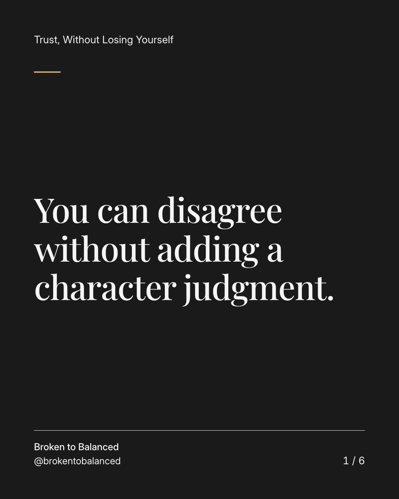
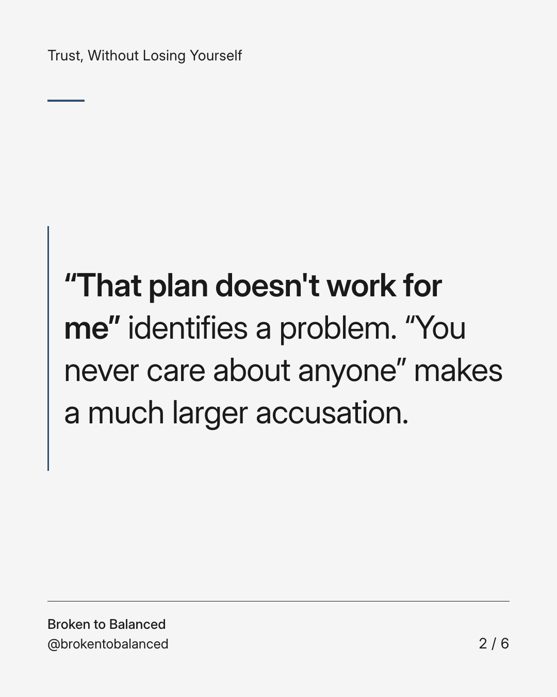
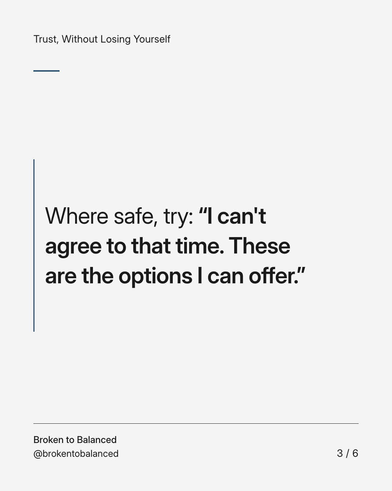
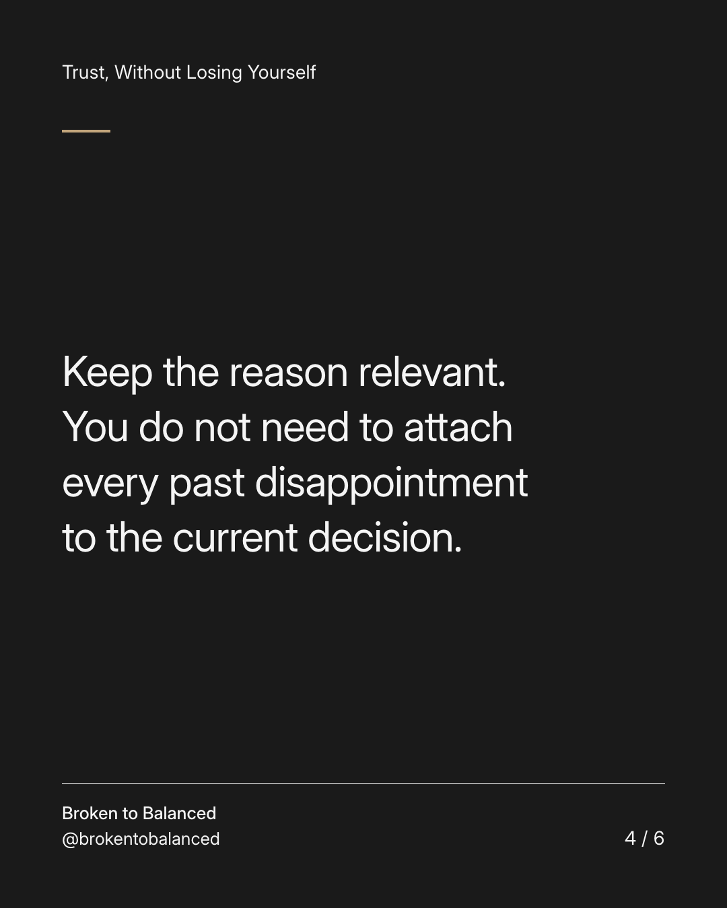
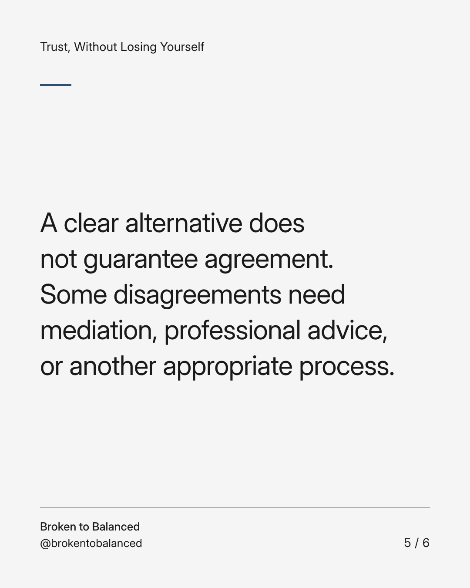
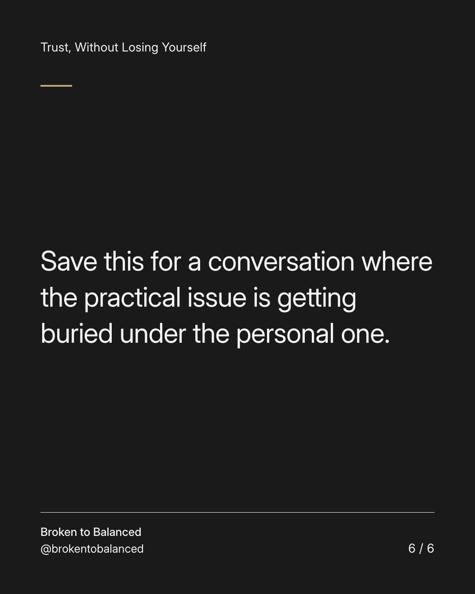

Exact text and accessibility text
You can disagree without adding a character judgment.
Slide 1 of 6. You can disagree without adding a character judgment.


Exact text and accessibility text
“That plan doesn't work for me” identifies a problem. “You never care about anyone” makes a much larger accusation.
Slide 2 of 6. “That plan doesn't work for me” identifies a problem. “You never care about anyone” makes a much larger accusation.


Exact text and accessibility text
Where safe, try: “I can't agree to that time. These are the options I can offer.”
Slide 3 of 6. Where safe, try: “I can't agree to that time. These are the options I can offer.”


Exact text and accessibility text
Keep the reason relevant. You do not need to attach every past disappointment to the current decision.
Slide 4 of 6. Keep the reason relevant. You do not need to attach every past disappointment to the current decision.


Exact text and accessibility text
A clear alternative does not guarantee agreement. Some disagreements need mediation, professional advice, or another appropriate process.
Slide 5 of 6. A clear alternative does not guarantee agreement. Some disagreements need mediation, professional advice, or another appropriate process.


Exact text and accessibility text
Save this for a conversation where the practical issue is getting buried under the personal one.
Slide 6 of 6. Save this for a conversation where the practical issue is getting buried under the personal one.
Exact caption
Plain-text fallback: select and copy the caption.